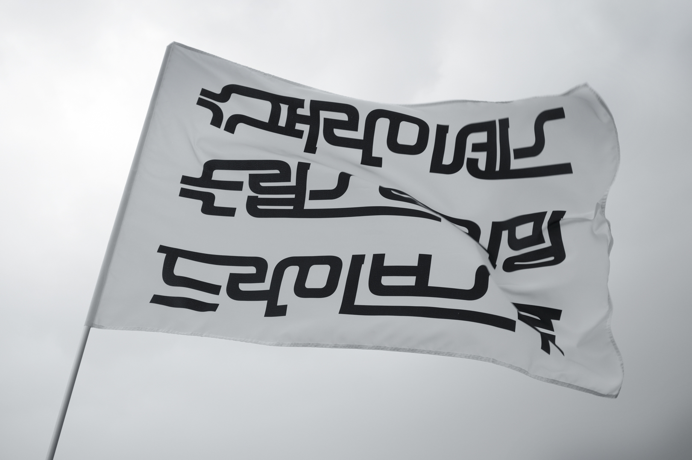
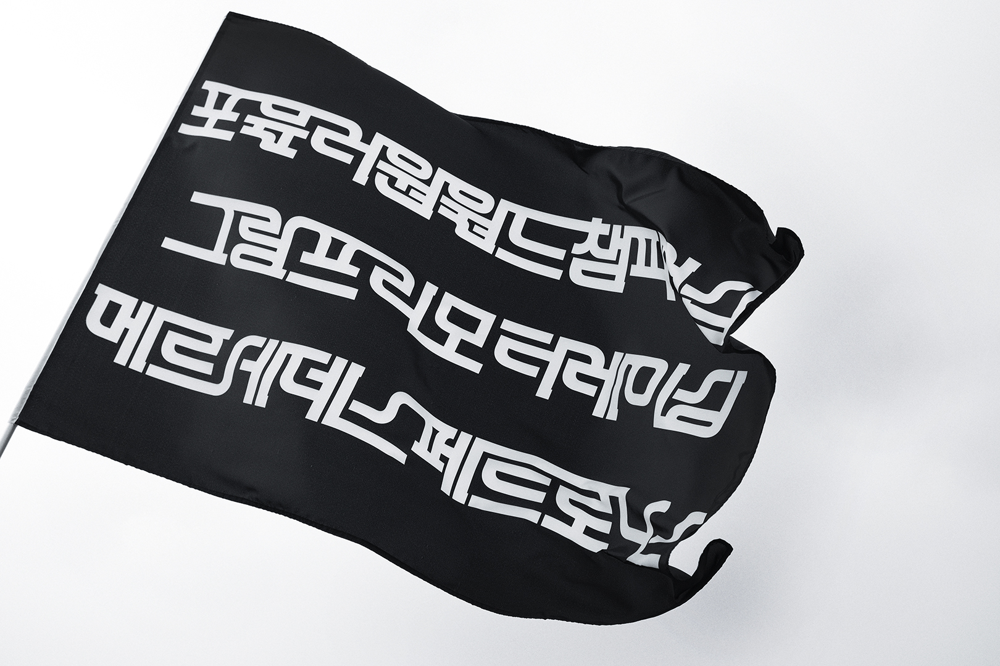
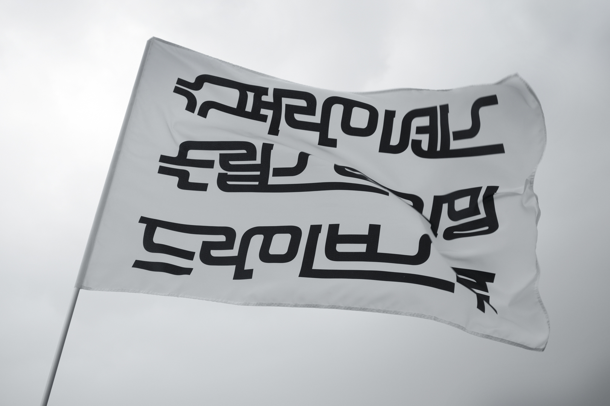
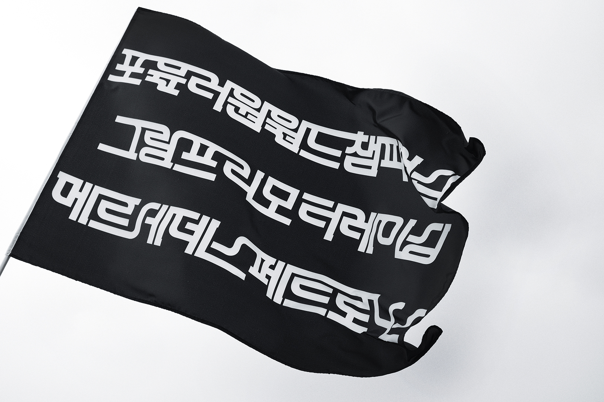

{ BOOOOOOM }
2022. 1.7. - 1. 31.
파주타이포그라피배곳
2021 마친보람 맺음전
Paju Typography Institute
Deobaegot Graduation Exhibition
박창규
Park Changgyu
슈퍼, 속도 있는 글자; 서킷의 형태로부터
SUPER, Speedy letters: from the circuit form
대표적인 자동차 경주인 포뮬러 원(Formula One, 이하 F1)에서 영감을 받아 글꼴 ‘슈퍼’를 만들었다. F1 경기가 열리는 전용도로를 ‘서킷’이라고 하는데 각 서킷은 제각기 다양한 특성을 가졌지만 한 가지 공동점이 있는데 출발점과 도착점이 같다는 점에 아이디어를 얻어 이 글꼴의 키워드를 ‘연결’로 설정했다. F1의 문화는 서양의 것이다. 그렇기 때문에 F1 용어도 한글이 아니다. 외래어를 현지 발음대로 한글로 표기할 뿐이다. 외래어를 한글로 표기했을 때 느껴지는 한글의 낯선 조합이 F1의 분위기를 잘 담아낸다.
 


